S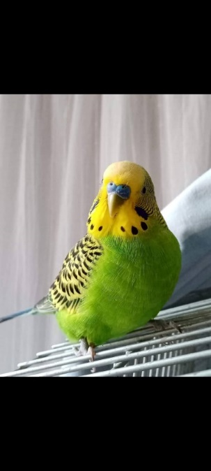
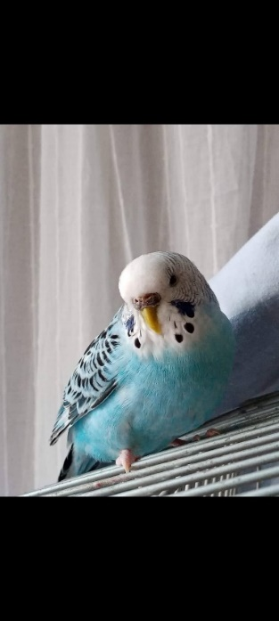
zülők:
Tyutyu
és Pityu, 4 és fél éves pár
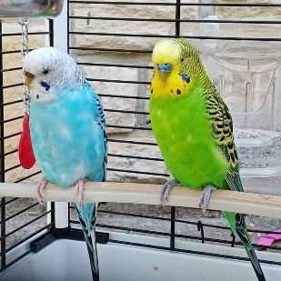
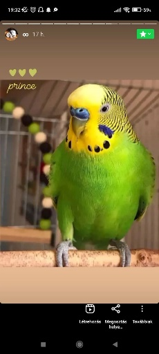 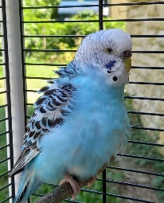 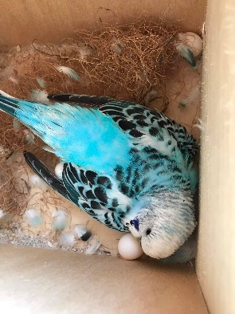 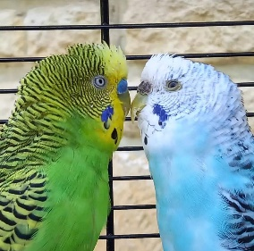
M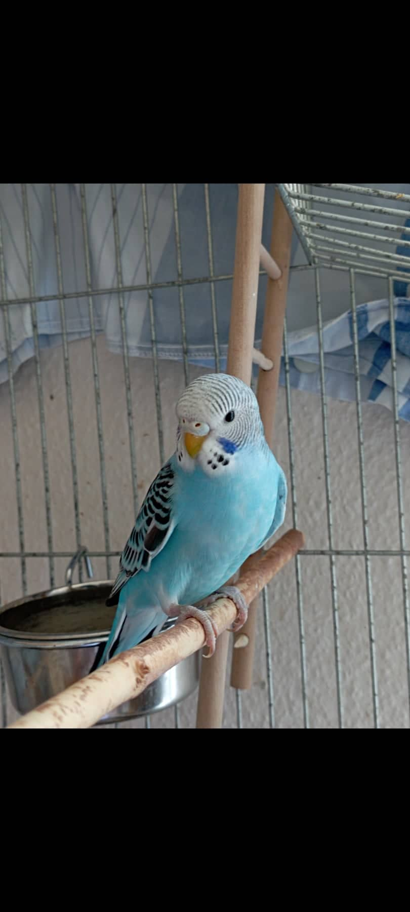
ilou
Nem:
valószínűleg lány
Kor: 4 hónapos
T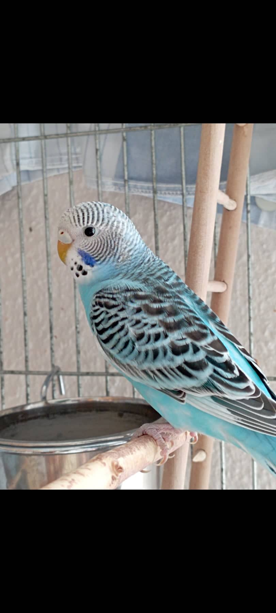 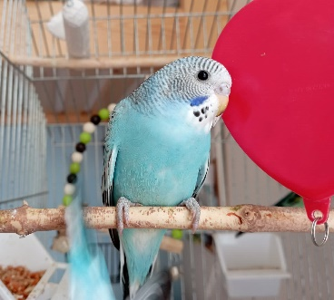 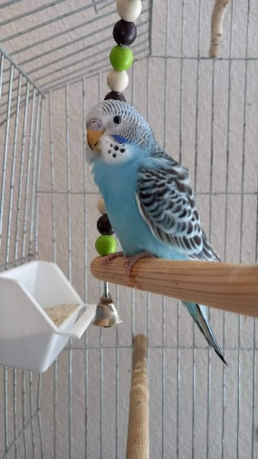 ulajdonságai: félős, de Bonival biztonságban érzi magát, nagyon játékos, okos, ha veszélyben érzi magát eléggé csíp, de munkával le lehet szoktatni róla.
B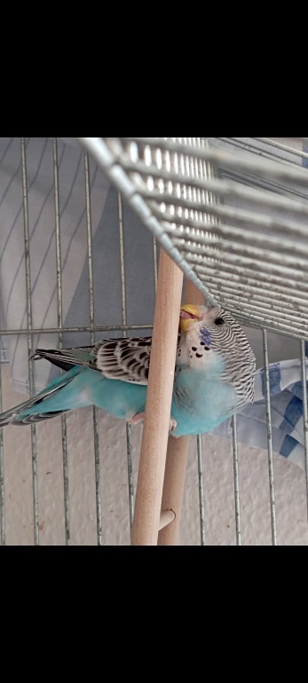
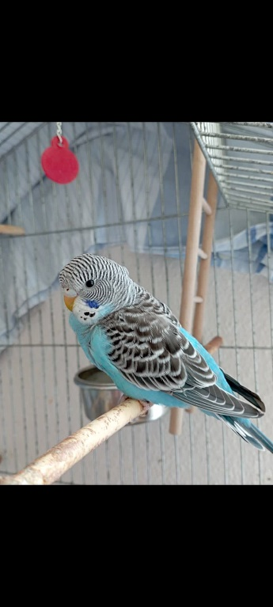
oni
(fác)
Nem:
valószínűleg fiú
Kor: 4 hónapos
T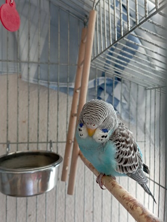 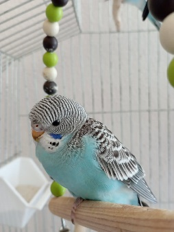 ulajdonságai: nagy a helyigénye, sok játékra van szüksége, imád szórakozni, önálló, egyelőre félős.
KETTEN
EGYÜTT: 6 500 Ft
a
kézhez szoktatásuk elkezdődött!
csak egyben eladók!!
Csak olyan családnak szeretnénk adni őket, akik akár 10 éven keresztül is gondjukat viselik a piciknek és megfelelően gondoskodnak róluk! Tanácsot szívesen adok a gondozásukkal kapcsolatban!
FONTOS: Mivel nagyon nehezen válok meg tőlük, az a kérésem, hogy a gazdi a madarakról 2-3 havonta küldjön egy fényképet. Köszönöm 🙂